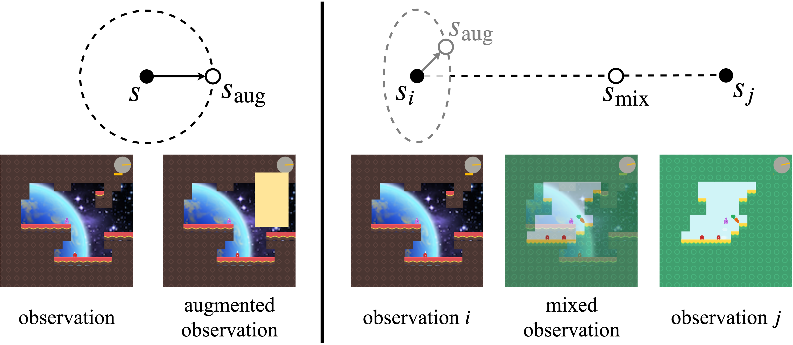
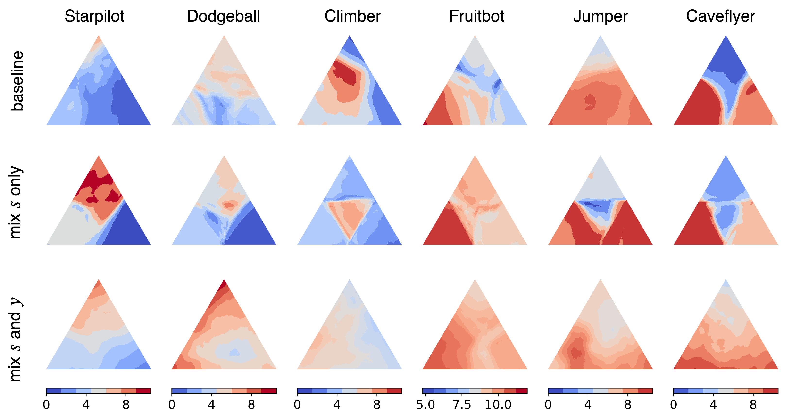

Improving Generalization in Reinforcement Learning with Mixture Regularization
|
Kaixin Wang
|
Bingyi Kang
|
Jie Shao
|
Jiashi Feng
|
|
NUS
|
NUS
|
ByteDance AI Lab
|
NUS
|
Abstract
Deep reinforcement learning (RL) agents trained in a limited set of environments tend to
suffer overfitting and fail to generalize to unseen testing environments.
To improve their generalizability, data augmentation approaches (e.g. cutout and random
convolution)
are previously explored to increase the data diversity. However, we find these approaches only
locally perturb the observations regardless of the training environments, showing limited
effectiveness on enhancing the data diversity and the generalization performance.
In this work, we introduce a simple approach, named mixreg, which trains agents on a mixture of
observations from different training environments and imposes linearity constraints on the
observation interpolations and the supervision (e.g. associated reward) interpolations.
Mixreg increases the data diversity more effectively and helps learn smoother policies.
We verify its effectiveness on improving generalization by conducting extensive experiments
on the large-scale Procgen benchmark. Results show mixreg outperforms the well-established
baselines on unseen testing environments by a large margin. Mixreg is simple, effective and
general.
It can be applied to both policy-based and value-based RL algorithms.
Increase training diversity

Previous data augmentation techniques (e.g. cutout) only apply local perturbations
over the observation. They independently augment each observation regardless of training
environments and achieve limited data diversity increment. Inspired by the success of
mixup in supervised learning, we introduce mixture regularization (mixreg) to increase
the training diversity via interpolating both observations and the associated supervision
signals (e.g. reward). We find mixreg improves generalization on Procgen Benchmark and
helps learn a smooth policy and value function. The figure below visualizes the learned value
function. We plot the value predictions \(V(s)\) for observation \(s\) within the convex hull of
three randomly selected observations from the testing environments.

Results
|